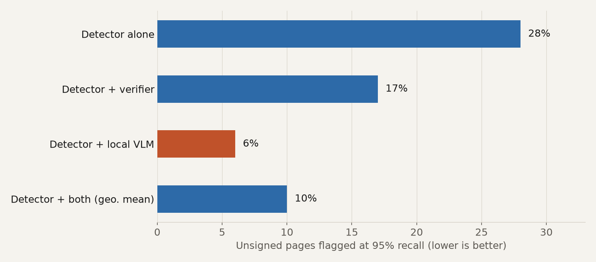

Computer vision · Document AI · 2026
Signature detection in documents
Flags which PDFs in a folder carry a handwritten signature or initials, tuned for recall, with an optional local vision-language model as a second opinion.

0.984AUC with detector + VLM verifier combined
0.943AUC of the detector alone
96.6%of signatures caught on 400 hand-labelled real scans
177 PDFs / 103 send-to-end on one GPU
The problem
Reviewing which of hundreds of scanned contracts are actually signed is slow, and a missed signature costs more than a false alarm. The tool marks documents; a person reviews the marked ones.
How it works
- PDFrender pages, read digital signatures
- Detectortransformer object detector
- Verifieroptional local VLM on each crop
- OutputCSV + local gallery for review
What mattered
- Recall first. Thresholds are chosen on a held-out split at 95–98% recall, never on the test set.
- Unlabelled is not negative. In public document datasets about 1 in 5 of the hard "no signature" examples actually contained one; training on them hurt. Clean negatives fixed it.
- Synthetic signatures composed onto scanned backgrounds with scanner noise extend the training set.
- Second opinion. A local vision-language model re-checks each crop (0.22 s per crop) and cuts false positives at the same recall.
About the data. Trained and evaluated only on public document datasets.